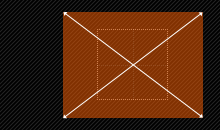

# 转换(Transform)
# 前言
本人平时学习及收集内容，欢迎参入一起讨论。
# 内容
# 一、Transform 功能介绍
Transform 属性向元素应用 2D 或 3D 转换。该属性允许我们对元素进行旋转、缩放、移动或倾斜。
语法： transform: none | transform-functions，初始值是 none;
Transform-functions 的取值如下：
- matrix：定义距阵元素对象。
- translate：移动元素对象。
- scale：缩放元素对象。
- rotate：旋转元素对象。
- skew：倾斜元素对象。
# 例子
HTML 代码：
<h2>transform属性</h2>
<div class="rotate">
<img src="http://m1.img.srcdd.com/farm5/d/2015/0228/22/FD9886C5434AC71115812ED3DB6409B9_B500_900_500_269.jpeg"/>
</div>
2
3
4
CSS 代码如下：
.rotate img{
-webkit-transform:rotate(0deg);
-moz-transform:rotate(0deg);
-o-transform:rotate(0deg);
transition:1s all linear;
}
.rotate {width:520px;height:280px;overflow:hidden;}
.rotate img:hover{
-webkit-transform:rotate(90deg);
-moz-transform:rotate(90deg);
-o-transform:rotate(90deg);
transform:rotate(90deg);
}
2
3
4
5
6
7
8
9
10
11
12
13
# 二、旋转 rotate
rotate(

# 三、移动 translate
移动 translate 我们分为三种情况：translate(x,y)水平方向和垂直方向同时移动（也就是 X 轴和 Y 轴同时移动）；translateX(x)仅水平方向移动(X 轴移动)；translateY(Y)仅垂直方向移动（Y 轴移动），具体使用方法如下：
# 3.1 translate
通过矢量[tx,ty]指定一个 2D translation,tx 是第一个过渡值参数，ty 是第二个过渡值参数选项。如果未被提供，则 ty 以 0 作为其值。也就是 translate(x,y)，它表示对象进行平移，按照设定的 x,y 参数值，当值为负数时，反方向移动物体，其基点默认为元素中心点，也可以根据 transform-origin 进行改变基点。如 transform:translate(100px,20px):

# 3.2 translateX
通过给定一个 X 方向上的数目指定一个 translation。只向 x 轴进行移动元素，同样其基点是元素中心点，也可以根据 transform-origin 改变基点位置。如：transform:translateX(100px):
# 3.3 translateY
通过给定 Y 方向的数目指定一个 translation。只向 Y 轴进行移动，基点在元素心点，可以通过 transform-origin 改变基点位置。如：transform:translateY(20px):

# 四、缩放 scale
缩放 scale 和移动 translate 是极其相似，他也具有三种情况：scale(x,y)使元素水平方向和垂直方向同时绽放（也就是 X 轴和 Y 轴同时缩放）；scaleX(x)元素仅水平方向缩放（X 轴缩放）；scaleY(y)元素仅垂直方向缩放（Y 轴缩放），但它们具有相同的缩放中心点和基数，其中心点就是元素的中心位置，绽放基数为 1，如果其值大于 1 元素就放大，反之其值小于 1，元素缩小。下面我们具体来看看这三种情况具体使用方法：
# 4.1 scale([,])
提供执行[sx,sy]缩放矢量的两个参数指定一个 2D scale（2D 缩放）。如果第二个参数未提供，则取与第一个参数一样的值。scale(X,Y)是用于对元素进行缩放，可以通过 transform-origin 对元素的基点进行设置，同样基点在元素中心位置；X 表示水平方向缩放的倍数，Y 表示垂直方向的缩放倍数，而 Y 是一个可选参数，如果没有设置 Y 值，则表示 X，Y 两个方向的缩放倍数是一样的。并以 X 为准。如：transform:scale(2,1.5);

# 4.2 scaleX()
使用 [sx,1] 缩放矢量执行缩放操作，sx 为所需参数。scaleX 表示元素只在 X 轴(水平方向)缩放元素，他的默认值是(1,1)，其基点一样是在元素的中心位置，我们同样是通过 transform-origin 来改变元素的基点。如：transform:scaleX(2):

# 4.3 scaleY()
使用 [1,sy] 缩放矢量执行缩放操作，sy 为所需参数。scaleY 表示元素只在 Y 轴（垂直方向）缩放元素，其基点同样是在元素中心位置，可以通过 transform-origin 来改变元素的基点。如 transform:scaleY(2):

# 五、扭曲 skew
扭曲 skew 和 translate、scale 一样同样具有三种情况：skew(x,y)使元素在水平和垂直方向同时扭曲（X 轴和 Y 轴同时按一定的角度值进行扭曲变形）；skewX(x)仅使元素在水平方向变形（X 轴扭曲变形）；skewY(y)仅使元素在垂直方向扭曲变形（Y 轴扭曲变形）
# 5.1 skew( [, ])
X 轴 Y 轴上的 skew transformation（斜切变换）。第一个参数对应 X 轴，第二个参数对应 Y 轴。如果第二个参数未提供，则值为 0，也就是 Y 轴方向上无斜切。skew 是用来对元素进行扭曲变行，第一个参数是水平方向扭曲角度，第二个参数是垂直方向扭曲角度。其中第二个参数是可选参数，如果没有设置第二个参数，那么 Y 轴为 0deg。同样是以元素中心为基点，我们也可以通过 transform-origin 来改变元素的基点位置。如：transform:skew(30deg,10deg):

# 5.2 skewX()
按给定的角度沿 X 轴指定一个 skew transformation（斜切变换）。skewX 是使元素以其中心为基点，并在水平方向（X 轴）进行扭曲变行，同样可以通过 transform-origin 来改变元素的基点。如：transform:skewX(30deg)

# 5.3 skewY()
按给定的角度沿 Y 轴指定一个 skew transformation（斜切变换）。skewY 是用来设置元素以其中心为基点并按给定的角度在垂直方向（Y 轴）扭曲变形。同样我们可以通过 transform-origin 来改变元素的基点。如：transform:skewY（10deg）
# 六、矩阵 matrix
matrix(<number>, <number>, <number>, <number>, <number>, <number>)： 以一个含六值的(a,b,c,d,e,f)变换矩阵的形式指定一个 2D 变换，相当于直接应用一个[a b c d e f]变换矩阵。就是基于水平方向（X 轴）和垂直方向（Y 轴）重新定位元素,此属性值使用涉及到数学中的矩阵，我在这里只是简单的说一下 CSS3 中的 transform 有这么一个属性值，如果有感兴趣的朋友可以去了解更深层次的 martix 使用方法，这里就不多说了。
# 七、原点 transform-origin
transform-origin 属性让你更改一个元素变形的原点，可以使用一个，两个或三个值来指定，其中每个值都表示一个偏移量。
如果定义了两个或更多值并且没有值的关键字，或者唯一使用的关键字是 center，则第一个值表示水平偏移量，第二个值表示垂直偏移量。
- 一个值：
- 必须是
<length>，<percentage>，或left、center、right、top、bottom关键字中的一个。
- 必须是
- 两个值：
- 其中一个必须是
<length>，<percentage>，或 left, center, right 关键字中的一个。 - 另一个必须是
<length>，<percentage>，或 top, center, bottom 关键字中的一个。
- 其中一个必须是
- 三个值：
- 前两个值和只有两个值时的用法相同。
- 第三个值必须是
<length>。它始终代表 Z 轴偏移量。
# 参考资料
- css3 动画功能介绍 (opens new window)
- css3 中的变形（transform）、过渡(transtion)、动画(animation) (opens new window)
- CSS3 transform 属性 (opens new window)
- MDN (opens new window)
# 联系作者
平凡世界，贵在坚持。